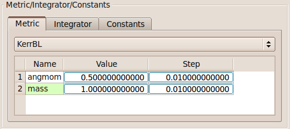
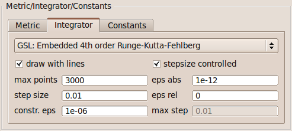

Metric/Integrator/Constants

The database of space-time metrics is taken from the Motion4D library. The standard subset contains the following metrics:
- Minkowski
- Schwarzschild
- SchwarzschildIsotropic
- KerrBL
- Morris-Thorne
- Cosmic string
Depending on the metric, there will be a list of all parameters. For the Kerr metric, e.g., we can adjust the angular momentum as well as the mass of the black hole.

Implemented integrators:
- Standard Runge-Kutta fourth-order.
- Standard Bulirsch-Stoer.
- Integrators from the GNU Scientific Library (GSL).
Parameters: